-
so my cousins s2000 snapped a rod and messed up the cylinder walls, taking out chunks with it. And his warenty wouldn't cover it…Any ways he bought an s12 with the vg30e in it about 2 months ago and loves everything about it. So he thought that Instead of buying a new or used f20c he would just put in a vg30e in the s2000…He looked at the 2jz swap and looked at swapping in an ls1 but he likes the small size and how reliable the vg30e is. This wasn't my decision at all. He called me one morning and I was still sleeping and told me that he wanted to put a vg into his s2000. I was half asleep and I was like..what?!? So I told him that it was going to be a bitch and a half but it could be done. So today I went to a junkyard with him in louisville and found an s12 with the vg30e in it and pulled the motor, tranny, wiring harness, ecu, maf, starter, slave clyinder and so on. I forgot the relays though…but I have a parts z31 out front. He says he has enough money to do what he wants and he is going to start out NA just to get it started and running. Then go on and turbo it and so on. So I guess my question is to put the motor in it and get it running what relays do I need to pull from my parts z31? Just the engine control and engine ignition? Fuse box? I don't quite know how to ask theses questions because well I don't have an s2000 and wanting to put the vg30e(t) into it. Haha anyways don't hate me if you don't like his idea. I told him I would help him because I would like to see a vg30e(t) in an s2000 :P Take this how you want to but I'll post up some pics tomorrow and show you his idea....its not everyday a honda guy wants to put a nissan motor into there s2000…
(a couple of nissan sr20's would pull a premium before race wars) :lol: -
I love the idea. The S2000 is a very well balanced an fun car with a *gasp* aftermarket support base the Z31 can only dream of. Very fun cars. My main complaint is the lack of lowend torque. So this could be one badass car in the end. Even better if the tranny would magically work in the car, they have a great shifter feel.
So it would be fast, AND you get you piss off Honda purists with your very presence. Sounds good to me. :nanan?reFeedback- viewtopic.php?f=18&t=19840

-
sweet he should start right away and have us updated with pics this is gonna be a great swap, if he pulls it off correct1uz Swapped, lowered, flaked out '86 z31
'72 Datsun 510 4dr, ka24de-T, slammed resto mod
'84 z31 turbo, coils, wheels a.k.a the gfs weekend car
'86 na2t parts for now a.k.a eventually will get running with a/c daily
'83 280zx project backburner a.k.a ls turbo drag car one day
Custom vg30et tube chassis drift exocet project -
I told him that it would have gobs of torque and that you can find vg30e's in any junk yard. Plus the vg30e is 7 inches shorter that the f20c and is also not as tall. It does weight a little bit more. a fully dressed vg30e weights like what 392? and the f20c weights 300lbs. He also can take off the nissan power steering because the s2000 has an electric hydrolic power steering. So thats some weight off the car. But he will have a better midship platform and what ever weight he does get up front he can relocate his battery to the back. Anyways He has taken measurements and the vg30e and the f20c motor mounts are almost in the same location. maybe a half an inch to an inch off. That is the same with the nissan tranny mounts..but he said he will have to make the s2000 tranny braket work with the nissan bracket but thats not a big deal. But the shifter is also about an inch and a half off. If anything he might have to cut a bigger hole where the shifter goes but thats also not a big deal. I told him that he could get Satan on here to make him a turbo manifold for him but that will be after he has it running in an NA form and then will be ready for boost. He already knows a shop that will make and balance a drive shaft for him so he is set on that..But the only problem he is having here is the Fuse box and engine relays. If anyone has any input about that please let me know…oh, one of my friends is going up to Maryland to purchase this 1st gen rx-7 with a sr20det in it..Here is the link.
http://www.rx7club.com/forum/showthread.php?t=758576
http://s27.photobucket.com/albums/c169/ … G_0038.jpg
In that picture it shows just a couple relays and a few fuses. So If no one knows I will wait and look at that then post back up here and tell you want relays and fuses he has to make that nissan motor work in a rx7.
Any input would be greatly appreciated. If you want to piss off any honda people now is the time to do it! So plz help
-
i've seen the 2jz s2000 but the vg30 dressed up right would be a show stopper. lots and lots of wtf's. i'd love to see it -
he'd be getting "wtf is that..ive never seen something like that before....is it american???"300cars wrote: i've seen the 2jz s2000 but the vg30 dressed up right would be a show stopper. lots and lots of wtf's. i'd love to see it
1988 570zx SS Edition
Originally posted by Neil86t -
he should have started with a 3.3 but whatever, it'll be fun no matter what -
How come alot of people say that? The whole "10% power for free" right? Funny that almost all the big power VG's you see are 3.0L anyway, so it cant be all that beneficial. -
The fact that it comes in the car might have something to do with it…300zxt wrote: How come alot of people say that? The whole "10% power for free" right? Funny that almost all the big power VG's you see are 3.0L anyway, so it cant be all that beneficial.Feedback- viewtopic.php?f=18&t=19840
-
Alright here is an update....The F20c motor is pulled and so is the tranny. The trannys are the same length from shifter to bell housing so thats good. The engine harness is removed and so is the ecu. He cleaned out the engine bay today and tomorrow he is going to either take off the drive shaft or make up some tranny mounts. The motor mounts on the vg30e is about an inch and a half off and the bolts are bigger on the s2000 so he has to make some adapter plates. The vg30e is going to set very far back and it clears everything. He has taken a tape measure and measured every angle and it is all going to fit just fine. Here are some pictures from a few days ago..Ill take more tomorrow..my batteries in my camera where dead today.
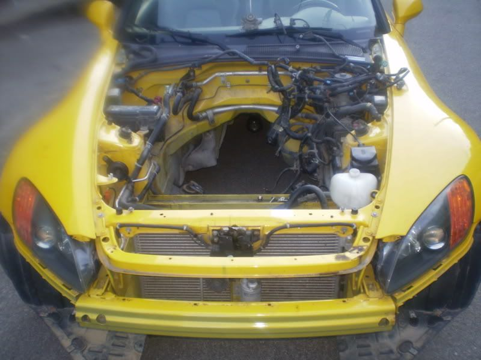
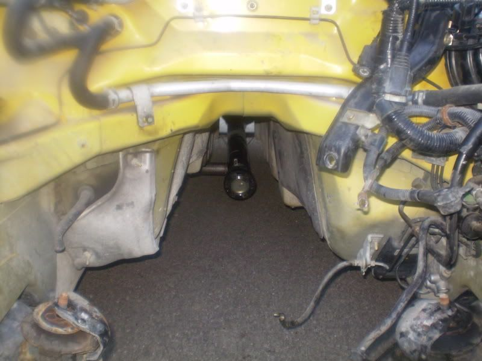
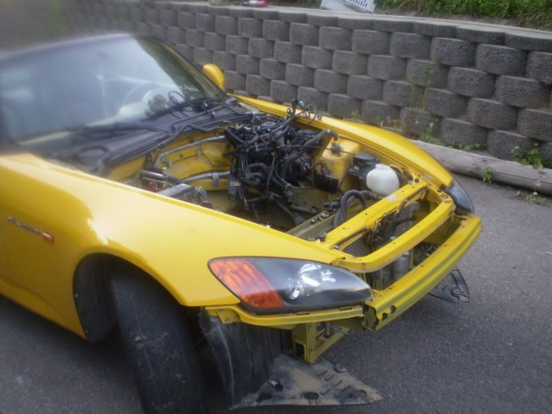
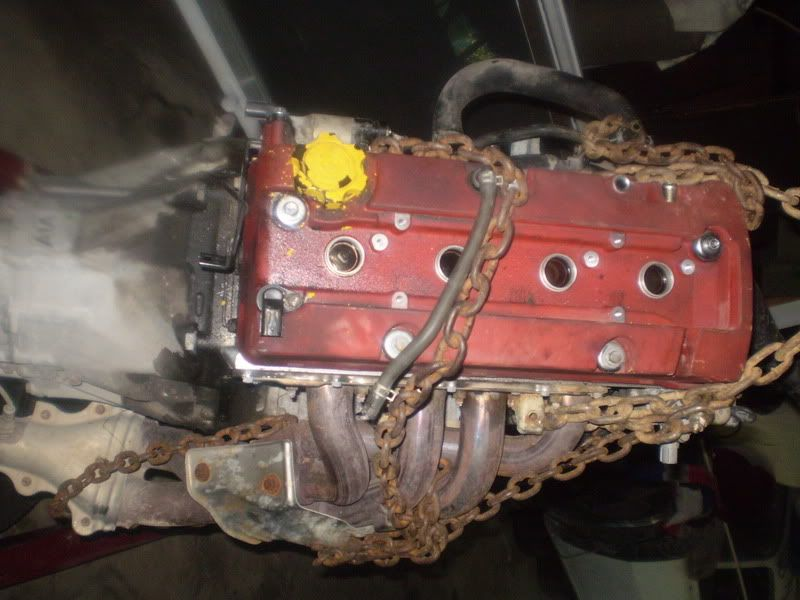
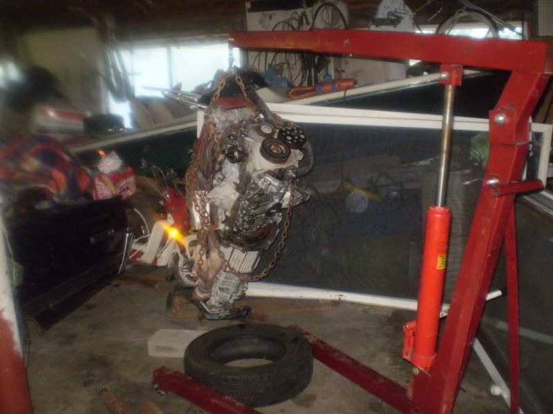
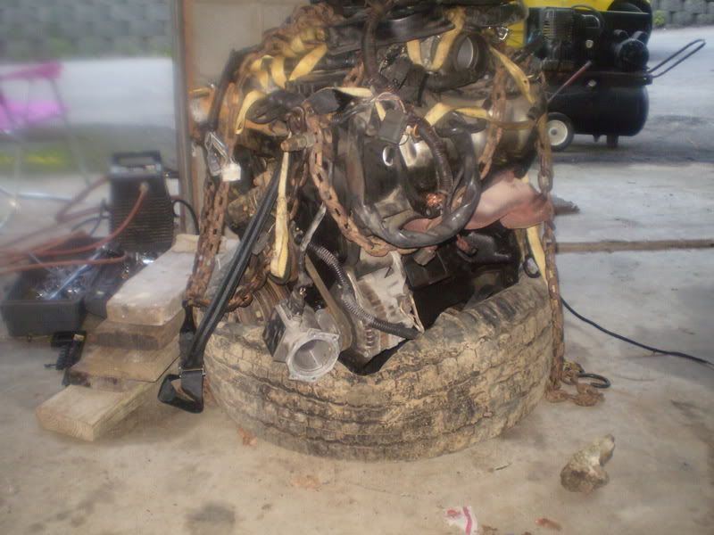 -
my friend would like to know whats happening with the old engine and trans. -
idk I think he is going to sell it to his dad. His dad has an austin healy that needs a motor…He would need to bore it out or whatever.
http://www.internationaltrs.com/showthread.php?t=97 -
We dropped the motor in earlier today. We found out that the mounts are too far up on the block and if we where to use them the oil pan would hit the ground. So he is making some adapters out out of steel from quality farm and fleet. The kind that trailers are made out of to pull boats and such. But as of right now everything seems to be going well. The transmission will fit in the transmission tunnel and the shifter should be fine. If it is off a little we can either cut around the shifter hole or make an adapter for the shifter. As of right now it will retain its midship platform and maybe with a little extra weight in the front it will help that snap over steer problem they have. The motor right now is sitting on a dolly with boards on it. I can't wait for the mounts to be done then we can run the wires and he can make the tranny mounts and make the drive shaft fit When the motor is installed and we have it running he is going to buy either a mega squirt or a nistune and 420cc injectors tune for that and slowly upgrade till it is ready for the hx35w holset turbo that he plans on getting. It might take a while but it is going to make for one bad ass s2000..I told him he should make a custom badge saying s3000 :P
Any ways enough of me talking here are some pictures
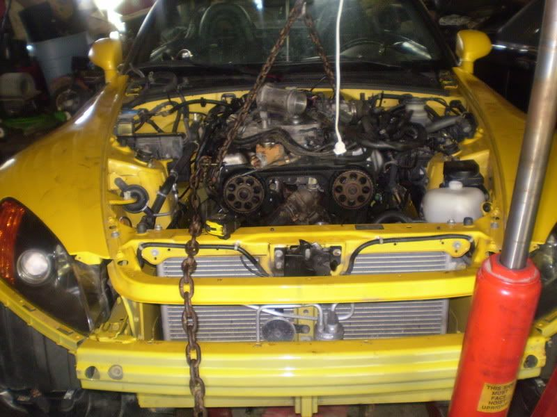
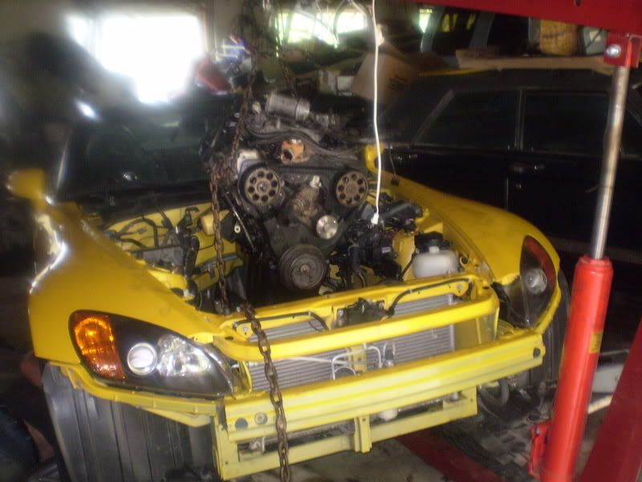
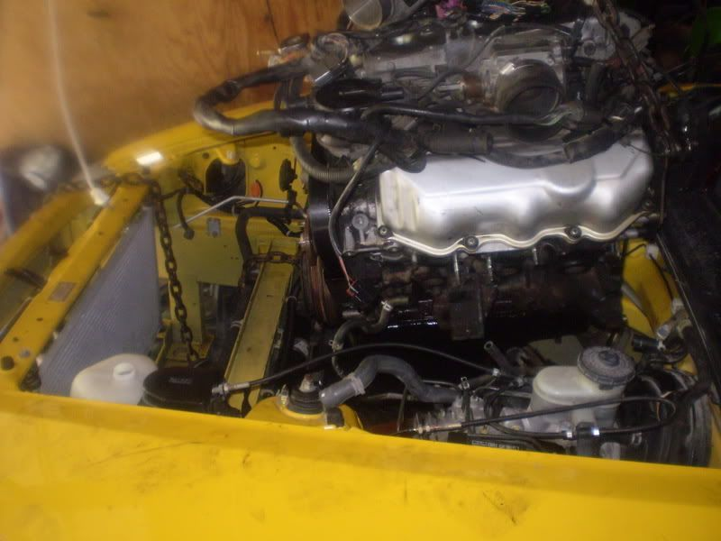
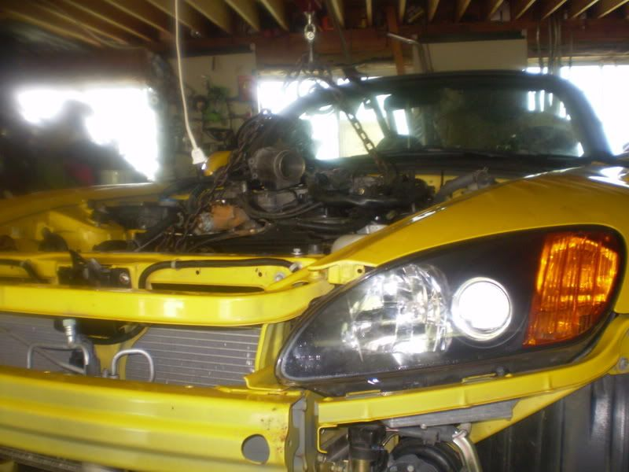
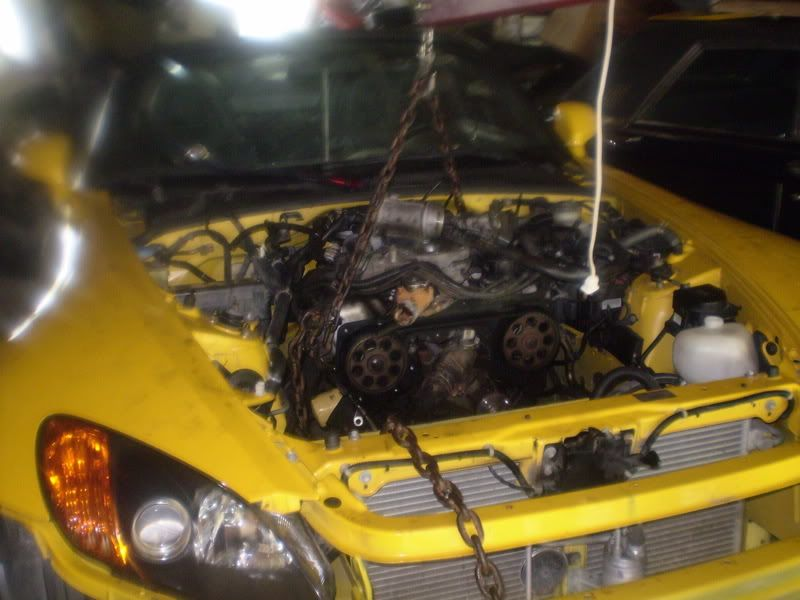
I know that the pulleys look like they hit but trust me they are about 3-5 inches away from the cross member
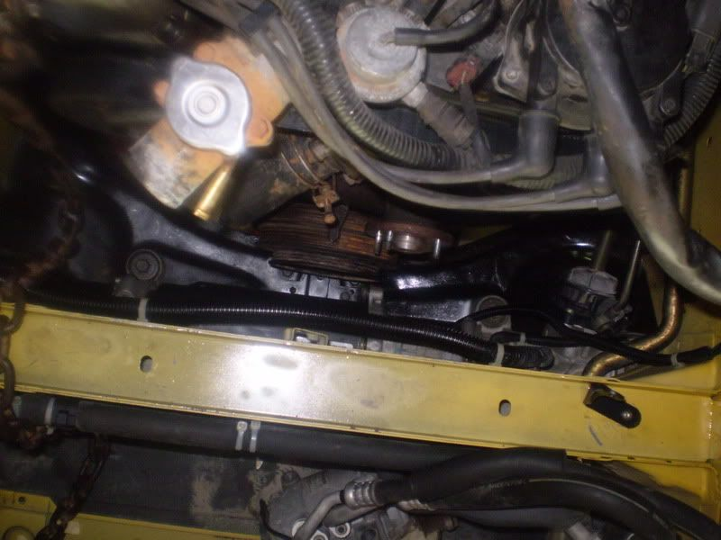
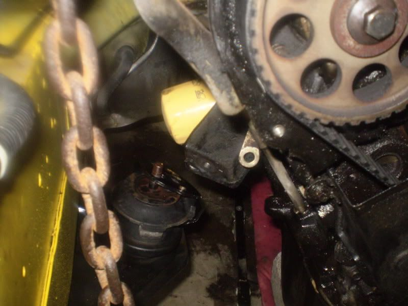
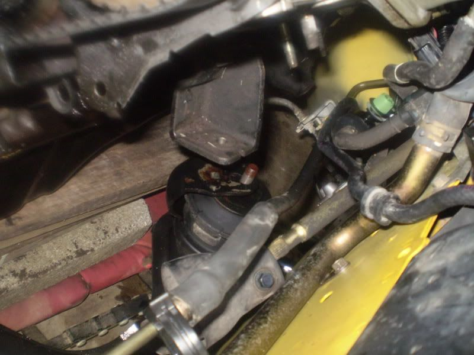
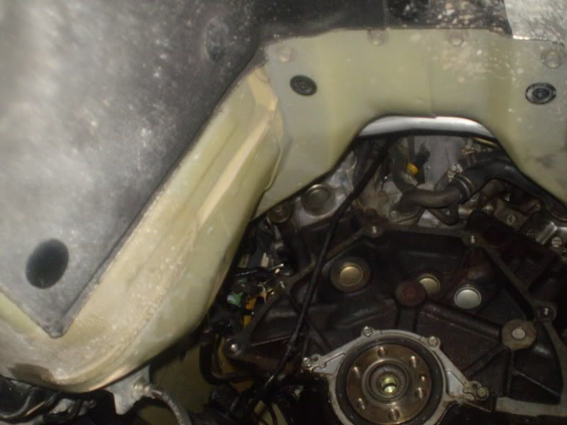
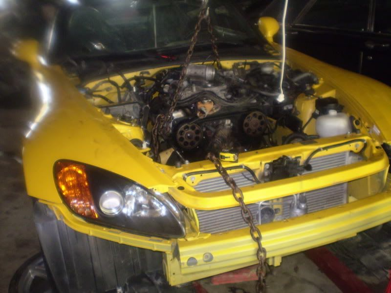
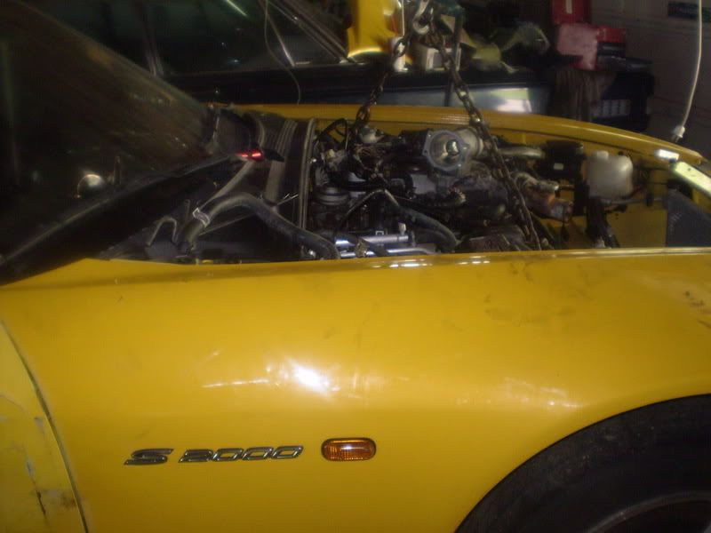
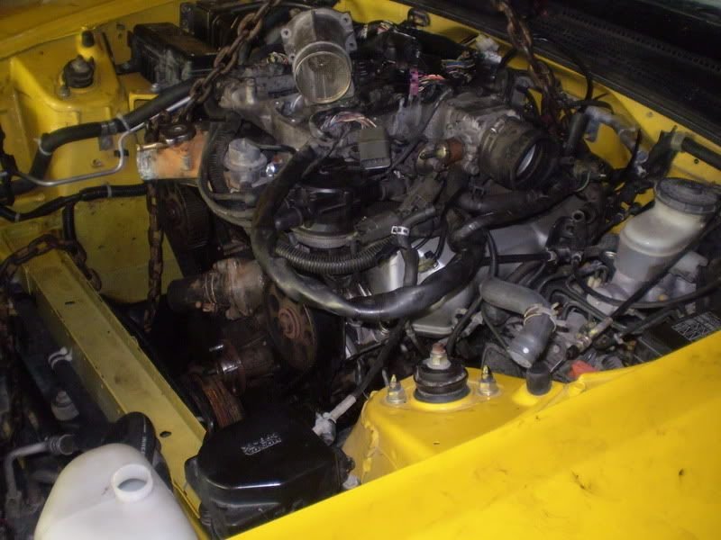
Idk maybe this should be moved out of the newbie area. But I didn't know where to put it. -
this looks awesome.
-
why thank you i took all the pics haha

Copyright © 2006–. All rights reserved. Privacy Policy